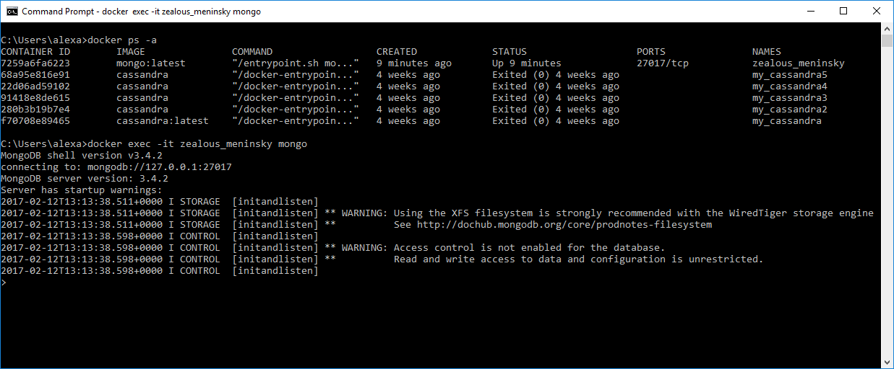
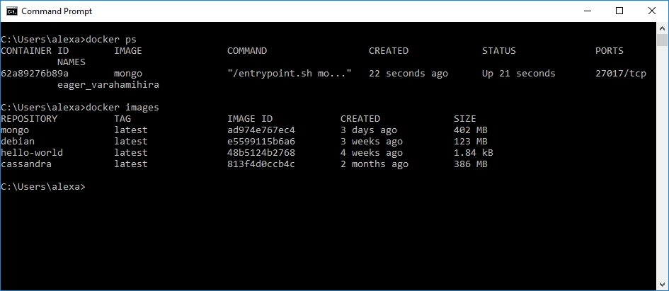
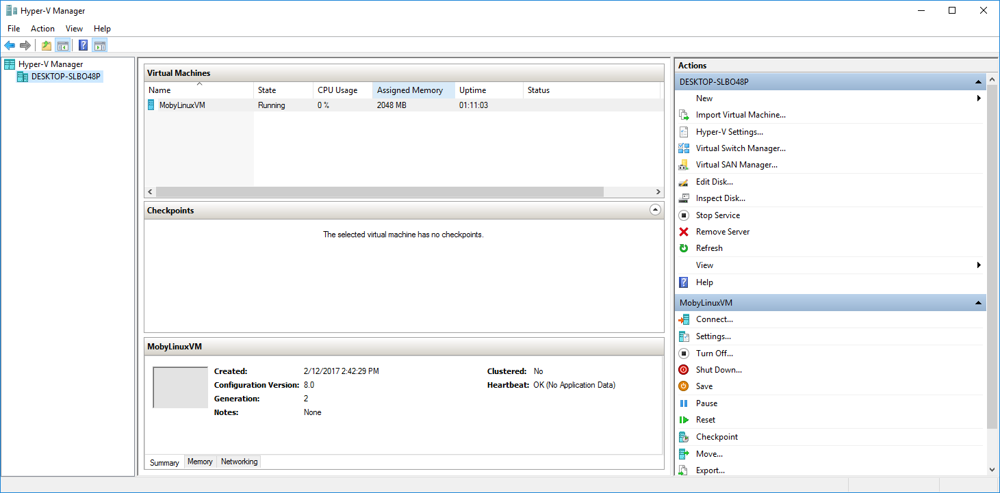
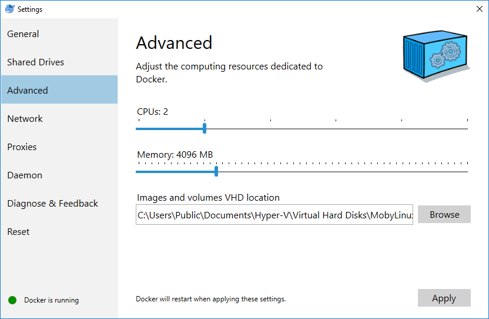
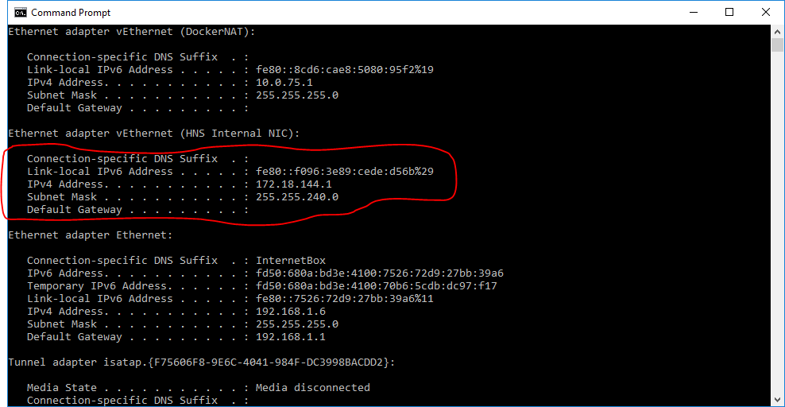
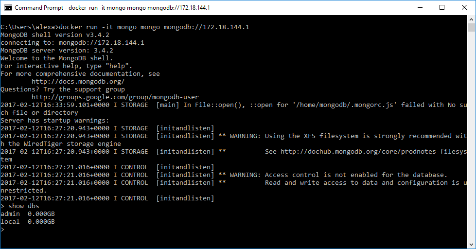
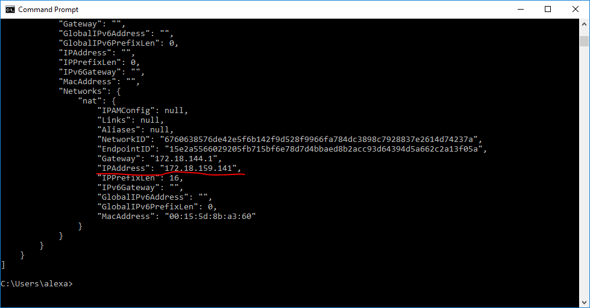
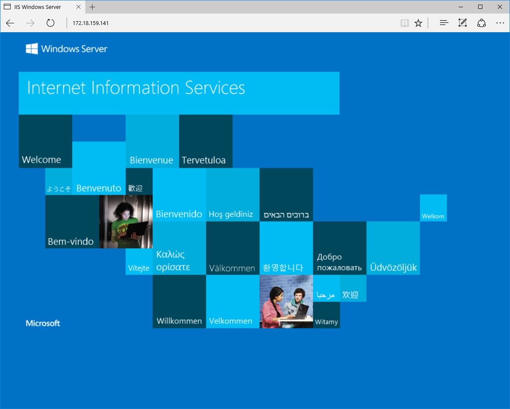

Docker And Containers
In this blogpost I write about Docker. My personal Docker cheatsheet. So why Docker? Because I am interested in distributed computing and I want to play with various technologies.
I want to be able to spin quickly complex setups and, at the same time, keep my desktop as clean as possible. The good news is that I can find all the software I need as docker containers. Even SQL Server or IIS, if I want.
Beside a huge collection of sofware already configured and the means of keeping tidy your deployments, Docker offers process isolation / sandboxing, simplified updates and ability to build your own repositories.
This post also touches Windows Containers running on Windows Nano Server or Windows Server Core - new features available in the Docker for Windows space.
Running MongoDB in a container:
c:\>docker pull mongo:latest
c:\>docker run mongo
In another console:
c:>docker ps -a
c:>docker exec -it zealous_meninsky mongo
docker ps -a lists containers and their names. docker run -it zealous_meninsky mongo runs interactively in the container named zealous_meninsky the mongo command.
-it wires both the stdin and stdout from the container, not just the stdout.

If you don't like the default name, in this case zealous_meninsky, just pass the --name _Name_I_Like_ after the docker run:
c:>docker run --name ThisIsMyContainerName mongo
To stop a container, just type (in this case):
c:>docker stop zealous_meninsky
To restart, just the same:
c:>docker start zealous_meninsky
To remove a container completely, stop it and then:
c:>docker rm zealous_meninsky
To remove all stopped containers (clean the system - Windows):
c:>FOR /f "tokens=*" %i IN ('docker ps -a -q') DO docker rm %i
In order to list the images:
c:>docker images

And, of course,
c:>docker rmi mongo
to remove the MongoDB image.
Containers and host memory
In order to run Linux containers, Docker spins off a Linux virtual machine. Attention: docker may run out of memory in this VM as, by default, it is set to only 2GB.

Setting the memory limit can be done through the Docker Settings UI, accessible from the tray icon. In my installation I set it to 4GB.

Mapping a port in the container to a port on localhost
In the following, the port 27017 from MongoDB docker container is mapped to localhost:27017
c:\>docker run -p 27017:27017 mongo
When we type only mongo we run the default command in the container which, in this case, is the MongoDB daemon. If we want to see the default command, just issue a docker ps. In the "COMMAND" column the command will appear.
If we want to run a command in a container, we do:
c:\>docker run -it mongo ps -ax
This will run the ps -ax command by launching a new mongo container and running it in its environment. It is different fom the previous exec, which runs in the same named container instance.
Let's connect to the mongo server we have just launched, but instead of connecting from the same container, I would like to connect from a different container.
First we run
c:>ipconfig

Then we launch a new container, this time not with the server but with the mongo client. Please notice the run (not exec) command the the double mongo mongo
c:>docker run -it mongo mongo mongodb://172.18.144.1
We get the following:

So what we did was to connect an application (the mongo client) launched in a new container to the localhost, where we had previously mapped the default mongo port from another container.
Docker for Windows - Windows Containers
First thing, right-click on the Docker For Windows tray icon and in the context menu press "Switch to Windows Containers".
Let's try to run IIS in a container. This time, I will not bind ports to localhost (although it should work like that) but rather connect directly to the IP address of the container.
I will run IIS in a nanoserver instance, as it is an only 400 MB download. :) The full Server Core is 4GB.
c:>docker run -d --name My_IIS microsoft/iis:nanoserver
c:>docker inspect My_IIS

And, of course, in Edge, connecting directly to the address obtained from docker inspect:
